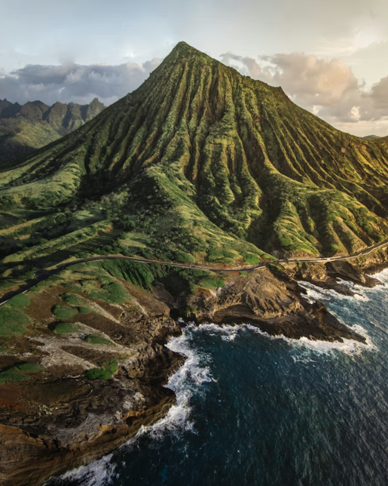

 Hawaiian volcanoes are some of the most active volcanoes in the world. They formed over a hotspot deep in the Earth’s mantle where magma rises to the surface. Most of these volcanoes are shield volcanoes, which have broad shapes and gently sloping sides. The lava that erupts is usually thin and runny, allowing it to flow easily. Because of this, lava can travel long distances before cooling and hardening. Over thousands of years, repeated eruptions built up layers of lava. These layers eventually formed the Hawaiian Islands.
Mauna Loa and Kīlauea are two of the most famous volcanoes in Hawaii. Mauna Loa is the largest volcano on Earth by area and volume. Kīlauea is one of the most active volcanoes in the world and erupts often. Both volcanoes are located on the Big Island of Hawaii. Their eruptions have shaped the island’s landscape in major ways. Lava flows have destroyed homes but also created new land. Even today, these volcanoes continue to change Hawaii’s environment.